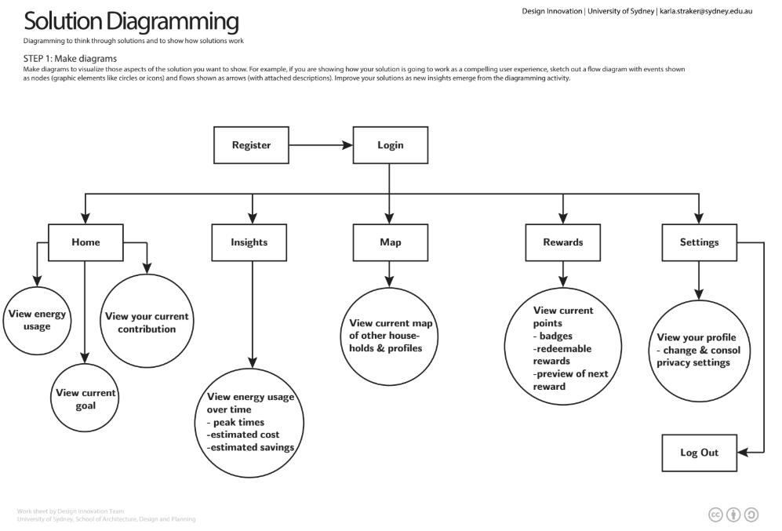
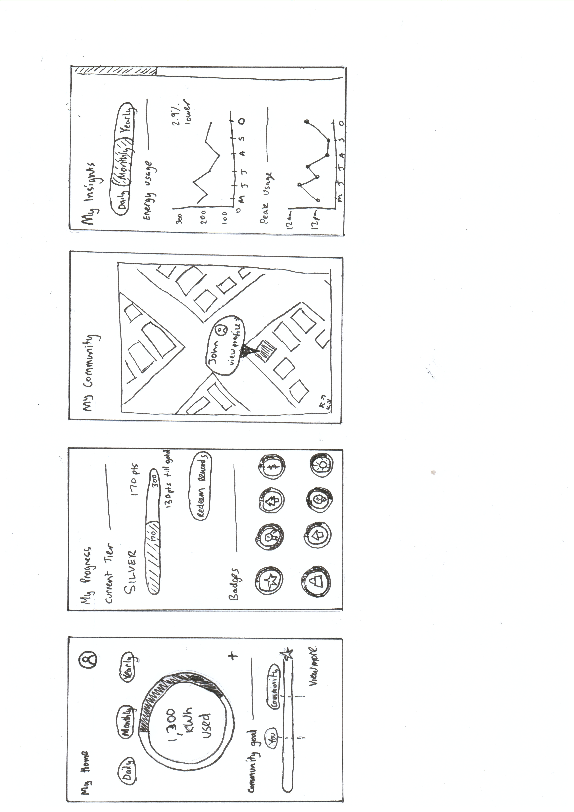
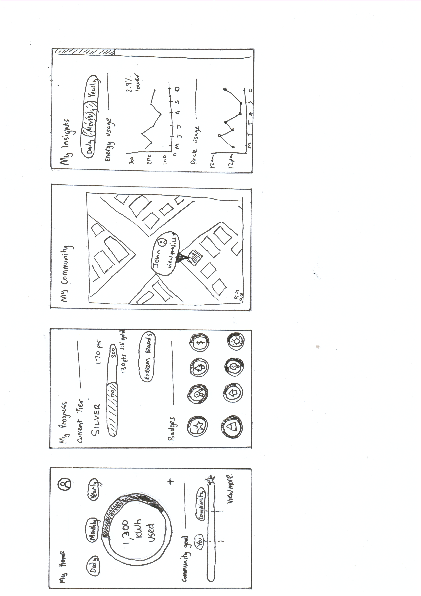

Brief: Future of Utilities
Today, more than 1.1 billion people have little or no access to electricity. The remaining 6.3 billion consume- for the most part- unsustainable energy. Access to alternative energy dramatically improves people’s safety, health and education and reduces greenhouse gas emissions. But consider that 59% of homeowners perceive installing a home solar system as a daunting and complex operation. This is only one example. Managing essential service networks, such as gas, electricity, and water, is being increasingly complex as they expand and as old infrastructure is being replaced. To remain in control, connected, and relevant, embracing innovation is essential. Most people don’t understand what a kilowatt hour is and how they are billed for their utilities, much less about the benefits and saving that come with switching to solar power.
Role
Class
Design for Innovation 2019 (12 weeks)
Team
Tools
Problem
The gradual increase in electricity bills and energy usage by homeowners over the decade has resulted in spending constraints to meet financial commitments. A solution that homeowners have resorted to was switching to renewable energy such as solar energy. The solution shifts the focus from the reliance on grid energy to self-generated energy as it would reduce the cost of electricity bills. Although there has been a rise in the installation of solar panels in homes, the return on investment of solar energy is still a high price to pay for some homeowners.
Solution
The solution is, Kilowatt, a household energy phone application that tracks energy usage whilst providing rewards and incentives when users hit milestones or targets. Kilowatt utilises a ranking system to encourage the user to consistently reduce energy usage to create incentives. Each rank presents users with new rewards such as discounts to solar panels and retail stores. Kilowatt also delivers a map of households and their owners who have signed up to the Kilowatt app to portray a competitive atmosphere between users. The app does not explicitly create a competition with users but displays user’s energy usage to suggest competitiveness.
Goals
Encourage Sustainable Energy usage
We wanted to provide incentives to encourage users to be cautious of their energy usage to decrease electricity costs.
Educate Users on Energy Usage
Educating users would allow them to maintain their own energy usage without the need of asking assistance from others.
Further Design Ideation/Innovation
I had a personal goal of furthering my ideation and innovation skills. I wanted to use new methods to find differnt solutions for the problems that were presented.
Process
Ideation
Design Criteria
Conceptualisation
Brainwriting 6-3-5
Brainwriting was surprising on the most helpful tools as it ensured new and bold ideas are generated through a collaborative session. Cycling ideas through each group member provided a fresh perspective for each concept which made us consider fresh aspects that we might not have considered individually.
By building on each others ideas allowed us to flesh out our chosen concepts. As a result, we generated 3 unique concepts that adhered to the design situation and specifications outlined:

Among the interviewees were full-time working parents, through our interviews, it was revealed that these individuals were able to regularly exercise under two conditions: when their children were busy or exercising with their children. It also illustrates the difficulty for parents to find time for exercise as responsibility for their child is a higher priority. However there a handful of individuals that utilise basic applications for their fitness needs such as step counters on in-phone apps.
Solution Diagramming
Using the solution diagramming method allowed us to map out and visualise the key features of the app. As a result, we had identified 4 key components we wanted to explore further. The home screen allow the user to see the households energy usage and current contribution in relation to the community goal, the insights tab which will highlight key information such as peak energy hours and total energy savings, the map tab will show the community map where you can view other households energy usage and the rewards tab where you can redeem points earned by saving energy to unlock energy utilities discounts.
Development
Low-Fidelity Wireframes
We created a number of low fidelity wireframes of the home, insights, rewards and community screens, each highlighting different elements and their visual hierarchy and user tested it with homeowners. This was an important stage in our design process as it allowed us to understand how our concept would be received by one of our core stakeholders. As a result, we gained valuable feedback on which elements users preferred for example, wanting more interactive visuals to convey insights rather than just displaying key data. Furthermore, it exposed issues that we might not have considered such as privacy issues while sharing data with other households. As a result, users are able to set their privacy constraints and control how much of their data is being shared.
 

Design Freeze
Communicating design solutions is understanding how best to explain your design solution to ensure others that it can be persued.By using the vision statement tool (fig. 10), we were able to come up with our brand name and slogan as well as clearly identify how our concept addresses the challenges of reducing household energy usage. ‘Kilowatt: Kill the Watt’ is a simple yet effective way that encapsulates our concept as a whole and drives in the message to reduce household energy. Brainstorming our video pitch (fig. 11) allowed us to successfully conceptualise how we wanted to communicate our design solution so that it would encourage our core stakeholders to use it.
Final Solution
Kilowatt is a mobile application that encourages your community to reduce household energy usage through rewards and incentives. It provides live household energy tracking and incentives your community to meet energy saving goals. By working towards community energy goals, users can earn points that can be redeemed for energy utilities discounts.
Kilowatt creates community energy goals and targets so individual households feel like they are a contributing part as opposed to competition with their neighbours. As part of a community, households will be more determined to reduce their energy usage by being able to compare their energy usage with their surrounding neighbourhood.
Kilowatt provides insights and patterns of a local area’s energy usage. Councils will access to this information can find value in being able to determine energy usage trends and work with government or energy providers to create better offerings to households. Meanwhile, energy providers are able to utilise a deeper understanding of more personalised geographic and psychographic data and can provide better tailored solutions to consumers.
Evaluation of Solution
During the exploration of concepts, three opportunity statements were found:
The opportunity statements revolved around the management of energy usage. From these opportunity statements, a design brief was created to provide a criteria that the solution had to achieve, consider features that the solution had to implement and consider some constraints that solutions will be working within and around.
A,B,E, of inspiration and brainwriting exercises were taken for the ideation process. A,B,E of inspiration gave better understanding of motivations and underlying behaviours associated with the current context and how the proposed context was going to change. Brainwriting allowed ideas to be passed through each group member to provide a fresh perspective for each concept and the consideration of aspects that may have not been considered individually.
From the design brief and ideation process, three concepts were created:
Live energy tracking - Independent source of mobile energy tracking
Energy trading - Platform for users to purchase and sell their personal generated energy
Utilisave - Competitive platform that enables users to connect with one another to reduce energy usage
Feedback from the tutors and class revealed that the utilisave concept best suited for the context of utilities, as it provided an incentive platform for users to reduce household energy. Utilisave was then rebranded as Kilowatt, a mobile phone application. Kilowatt incorporates the function of live energy tracking whilst providing incentive to reducing energy usage by offering rewards for hitting community and personal targets. Kilowatt targets not only household owners but also councils as it illustrates the peak energy usage areas. Kilowatt aims to build a community around energy usage through providing community goals and rewards.